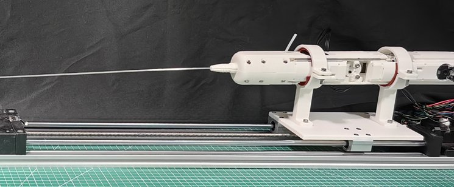

Actuated-tip devices · imperial_evar_ranne2026
Imperial EVAR catheter
Imperial modular tendon-driven robotic catheter for fenestrated/branched EVAR: thermally drawn 6 Fr two-segment catheter and a modular handle with one servo per antagonistic tendon pair


- Family
- Actuated-tip devices (actuated-device)
- Devices
- own 1 m, 6 Fr (2 mm) thermally drawn polycarbonate catheter: 8 x 200 um tendon channels, 1.1 mm central guidewire channel ('can accommodate a soft tip guidewire'; no guidewire is driven in the tests), two laser-profiled bending segments, 80 um molybdenum tendons (Sec. II-A, II-B, Figs. 2-3)
- Degrees of freedom
- 4 active bending DOF (two segments of 2 DOF, segments offset 45 deg); one Dynamixel per antagonistic tendon pair, 4 modules; insertion by a linear stage or by hand; no roll (Sec. II-B, II-C, II-D, III-C)
- Push
- Tip-actuated
- Twist
- None
- Tested up to
- Phantom
- Sim-to-real
- None found — No simulation-trained controller found for this robot.
Testing
- Highest level
- Phantom
- What was tested
- bench: bending angle of the second segment alone 35 deg, both segments 72 deg, multi-plane 36 deg (second) and 38 deg (first) (Sec. III-B, Fig. 6); phantom: 3-ring PLA obstacle course (rings 10 cm apart, 15 cm tall, middle ring 3 cm lower and 2.5 cm off the centre line) passed with the handle on a linear stage and an Xbox controller (Sec. III-C, Fig. 7); silicone abdominal aorta phantom: both renal arteries and the inferior mesenteric artery reached and dye injected (Sec. III-D, Fig. 8); trial counts N.R.
- Key numbers
- max bending 35 deg (distal segment), 72 deg (both) (Sec. III-B); FEA of laser-profile depth 0 to 0.6 mm lowers bending stiffness, chosen 0.4 mm (distal) and 0.2 mm (proximal) (Sec. III-A, Fig. 5); fibre drawn from a 40 mm x 15 cm PC preform, tens of metres per run (Sec. II-A, IV); tendons 80 um Mo; no accuracy, time or success numbers reported
Mechanism
- Push (translation)
- tendon/tip-actuation: each module's Dynamixel XL-330-M288-T drives a 0.5 MOD pinion between two racks (6 cm travel) that pull an antagonistic tendon pair (Sec. II-C, Fig. 4); advance: handle clamped to a linear stage with a screw clamp (stage drive N.R.), 'inserted using one hand' by design (Sec. II-C, III-C, Fig. 7a)
- Twist (rotation)
- none; two segments offset 45 deg give multi-plane bending (Sec. II-D, III-B)
- Device range
- 6 Fr (2 mm) OD, 1 m long, guidewire channel 1.1 mm (Sec. II-A, II-B); steerable length per segment N.R.
- Target anatomy
- fenestrated/branched endovascular aneurysm repair (FEVAR/BEVAR) of thoraco-abdominal aortic aneurysm, 'target vessel catheterization' (Abstract; Sec. I); tested in a silicone abdominal aorta phantom (Elastrat) reaching both renal arteries and the inferior mesenteric artery (Sec. III-D, Fig. 8)
Sensing and interface
- Force sensing
- none
- Leader and haptics
- no leader; Xbox controller in the tests, optional joystick module clamped on the handle (Sec. II-C, III-C, III-D)
- Imaging
- optical only: digital camera on the phantom with dye (Sec. III-D, Fig. 8); fluoroscopy used only as clinical background (Sec. I); handle is PLA, MR/X-ray compatibility N.R.
- Sterility
- N.R. (3D-printed PLA handle, spring-cable sheaths over the tendons; no sterile barrier described)
Size
- Footprint (mm)
- handheld: actuation module cylindrical, 56 mm; handle = 4 actuation modules + 1 cap module, PLA, dovetail-joined; other dimensions N.R. (Sec. II-C, Fig. 4c)
- Mass (kg)
- N.R.
Simulation
- Simulation model
- COMSOL finite-element model of the profiled tube (bending stiffness vs profile depth) and a constant-curvature forward kinematic model of the two segments (ranne2026_modular Sec. II-D, III-A, Fig. 5); no vessel simulation
- Sim-trained controller
- none found
Versions
- Lineage
- single version (ranne2026_modular, arXiv 2607.25807, 28 Jul 2026; no journal version found)
Sources
- Modular Robotic Catheters for Endovascular Aneurysm Repair · arXiv, 2026 · doi:10.48550/ARXIV.2607.25807 [ranne2026_modular]
Notes
- Notes
- REV4 2026-11-23: included after the full assessment of the 19 candidates (REV4_19_candidates.md §7). Handheld, not a bedside drive: the surgeon holds the handle (Sec. II-C). The title of the PDF is Modular Robotic Catheters for Endovascular Aneurysm Repair; the text calls the application AAA / T/AAA with FEVAR/BEVAR.
This record
- Read level
- full
- Picture
- ranne2026_modular Fig. 7(a) (handle on the linear stage, catheter, test course) ↗ — licence: arXiv preprint (DataCite: CC BY-NC-ND 4.0, to be confirmed on the listing); grade C
- Picture changes
- native extract (1629x1268); right part of panel (a) cropped; one white motion arrow on the black backdrop erased (LaMa, box 188,184,428,220); not upscaled
- Found by
- actuated-tip: Search of actuated-tip and magnetic devices.
- Data
- JSON · YAML:
records/robots/imperial_evar_ranne2026.yaml - Correction
- Suggest a correction [repository not created yet]